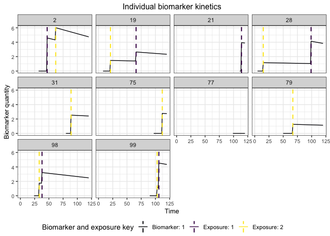
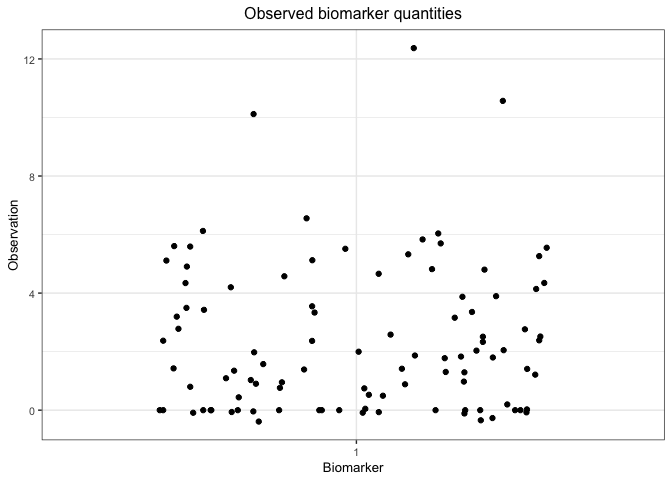

Motivation
The serosim package is designed to simulate serological data arising from user-specified vaccine or infection-generated and antibody kinetics processes. serosim allows users to specify and adjust model inputs responsible for generating the observed biomarker quantities like time-varying patterns of infection and vaccination, population demography, immunity and antibody kinetics, and serological survey sampling design in order to best represent the population and disease system(s) of interest.
Here, we will use the serosim package to generate a simple cross-sectional serosurvey at the end of a 10 year simulation period for 100 individuals who have either been vaccinated, infected, both or neither. We will set up each of the required arguments and models for the runserosim function in the order outlined in the methods section of the paper. We then run the simulation and examine its outputs.
In the vignettes folder, you can find a more detailed walk through of this simple README simulation titled quickstart.Rmd.
There are three additional complex vignettes/case studies in the vignettes folder.
Case study 1 provides an example of a longitudinal singular biomarker serological data simulation structured around measles, a one-pathogen system with vaccination, but also applicable to other vaccine preventable diseases.
Case study 2 provides an example of a cross-sectional multi-biomarker serological data structured around diphtheria and pertussis, a two-pathogen system with bivalent vaccination, but also applicable to multi-pathogen systems with multivalent vaccines.
Case study 3 provides an example of a cross-sectional serosurvey of a one pathogen system with cross-reactive strains, modeled after influenza. This example tracks 3 circulating strains and strain specific biomarkers produced after infection.
Case study 4 demonstrates how serological data simulated from a complex, realistic serosim model can be used to assess the accuracy of various seroepidemiological inference methods.
Installation
Load necessary packages:
## Install and load serosim
devtools::install_github("seroanalytics/serosim")
#>
#> ── R CMD build ─────────────────────────────────────────────────────────────────
#> checking for file ‘/private/var/folders/33/9_2zcl8d6nl5jjdl97fpmr080000gn/T/RtmpOtZbO8/remotes231339f3cb87/seroanalytics-serosim-ee073f8/DESCRIPTION’ ... ✔ checking for file ‘/private/var/folders/33/9_2zcl8d6nl5jjdl97fpmr080000gn/T/RtmpOtZbO8/remotes231339f3cb87/seroanalytics-serosim-ee073f8/DESCRIPTION’
#> ─ preparing ‘serosim’:
#> checking DESCRIPTION meta-information ... ✔ checking DESCRIPTION meta-information
#> ─ cleaning src
#> ─ checking for LF line-endings in source and make files and shell scripts
#> ─ checking for empty or unneeded directories
#> ─ building ‘serosim_0.0.0.9000.tar.gz’
#>
#>
library(serosim)
## Load additional packages required
library(tidyverse)
library(data.table)
library(ggplot2)
library(patchwork)
library(reshape2)1.1 Simulation Settings
We will simulate monthly time steps across a 10 year period.
## Specify the number of time steps in the simulation
times <- seq(1,120,by=1) 1.2 Population Demography
For this case study, we will be simulating a population with 100 individuals and we are not interested in tracking any demography information other than an individual’s birth time.
## Generate the population demography tibble
demography <- generate_pop_demography(N=100, times=times, prob_removal=0)
#> Joining with `by = join_by(i)`1.3 Exposure to biomarker mapping
Now we set up the exposure IDs and biomarker IDs for the simulation which will determine which infection or vaccination events are occurring. Here, we will simulate one circulating pathogen (exposure_ID=ifxn) and one vaccine (exposure_ID=vacc) both of which will boost the same biomarker, IgG titers (biomarker_ID=IgG).
## Create biomarker map
biomarker_map_original <- tibble(exposure_id=c("ifxn","vacc"),biomarker_id=c("IgG","IgG"))
## Reformat biomarker_map for runserosim
biomarker_map <-reformat_biomarker_map(biomarker_map_original)1.4 Force of Exposure and Exposure Model
Now, we need to specify the foe_pars argument which contains the force of exposure for all exposure_IDs across all time steps. The exposure model, specified within the runserosim function in section 1.9, will determine the probability that an individual is exposed to a specific exposure event.
## Create an empty array to store the force of exposure for all exposure types
foe_pars <- array(0, dim=c(1,max(times),n_distinct(biomarker_map$exposure_id)))
## Specify the force of exposure for exposure ID 1 which represents natural infection
foe_pars[,,1] <- 0.01
## Specify the force of exposure for exposure ID 2 which represents vaccination
foe_pars[,,2] <- 0.11.5 Immunity Model
Here, we specify the immunity model which will determine the probability that an exposure event is successful in producing an immunological response. We will use a simple immunity model (immunity_model_vacc_ifxn_simple) where successful exposure is only conditional on the total number of previous exposure events. With this model, the probability of successful vaccination exposure depends on the number of vaccines received prior to time t and the individual’s age at time t while the probability of successful infection is dependent on the number of infections prior to time t.
## All models and arguments for this section are directly specified within the runserosim function belwo in section 1.91.6 Antibody Model and Model Parameters
Now, we specify the antibody model to be used within runserosim to track antibody kinetics, or more broadly biomarker kinetics for each biomarker produced from successful exposure events. The antibody kinetics parameters are pre-loaded within a csv file. Users can edit the csv file to specify their own parameters.
## Bring in the antibody parameters needed for the antibody model
## Note that the observation error parameter needed for the observation model (Section 1.7) is defined here too.
model_pars_path <- system.file("extdata", "model_pars_README.csv", package = "serosim")
model_pars_original <- read.csv(file = model_pars_path, header = TRUE)
## Reformat model_pars for runserosim so that exposure_id and biomarker_id are numeric and match the exposure to biomarker map
model_pars<-reformat_biomarker_map(model_pars_original)1.7 Observation Model and observation_times
In this step, we specify the sampling design and assay choice for our serological survey. We will take samples of all individuals at the end of the simulation (t=120).
## All models and arguments for this section are directly specified within the runserosim function belwo in section 1.91.9 Run Simulation
This is the core simulation where all simulation settings, models and parameters are specified within the main simulation function. Run time for this step varies depending on the number of individuals and the complexities of the specified models. There is a built in pre-computation step within runserosim where the simulation attempts to perform as much pre-computation as possible for the exposure model to speed up the main simulation code. Users can turn off this pre-computation by setting pre-computation to FALSE within runserosim.
## Run the core simulation and save outputs in "res"
res<- runserosim(
simulation_settings=list("t_start"=1,"t_end"=max(times)),
demography,
observation_times=tibble(i=1:max(demography$i),t=120, b=1),
foe_pars,
biomarker_map,
model_pars,
exposure_model=exposure_model_simple_FOE,
immunity_model=immunity_model_vacc_ifxn_simple,
antibody_model=antibody_model_monophasic,
observation_model=observation_model_continuous_noise,
draw_parameters=draw_parameters_random_fx,
## Other arguments needed
max_events=c(1,1),
vacc_exposures=2,
vacc_age=c(NA,9),
sensitivity=0.85,
specificity=0.9
)1.10 Generate Plots
Now that the simulation is complete, let’s plot and examine some of the simulation outputs.
## Plot biomarker kinetics and immune histories for 10 individuals
plot_subset_individuals_history(res$biomarker_states, res$immune_histories_long, subset=10, demography)
#> Warning: Removed 31 rows containing missing values (`geom_line()`).
## Plot the serosurvey results (observed biomarker quantities)
plot_obs_biomarkers_one_sample(res$observed_biomarker_states)